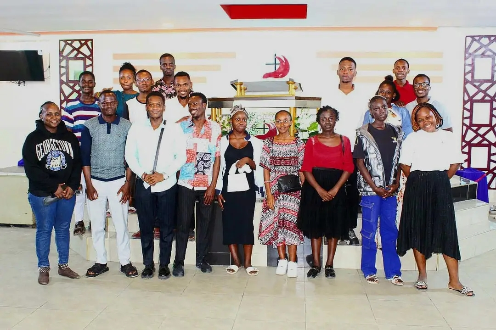

At the heart of The Wave Africa are our core pillars that guide our mission and vision.
Anchoring youth in Christ and biblical teachings.
Breathing new life into ancient values and truths to restore purpose.
Fostering family and fellowship through love, support, and
Our pillars form the foundation of our movement, ensuring that we stay true to our mission and vision as we serve the youth of Africa.
Anchoring youth in a strong relationship with Christ, rooted in biblical truth. We provide discipleship, prayer gatherings, and worship to strengthen their faith and guide their journey.
Reviving timeless values and ancient landmarks that have been forgotten. We restore these truths in the hearts of the youth, inspiring them to live purpose-driven lives for God.
Fostering family and fellowship through love, support, and accountability. We build a strong community where every youth belongs, grows, and thrives together in Christ.